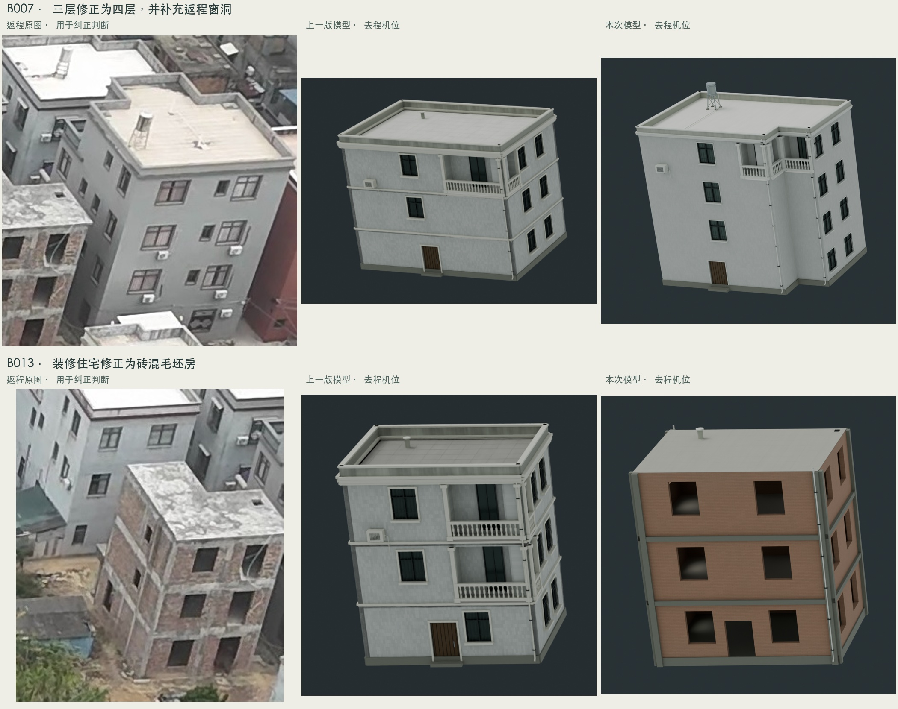
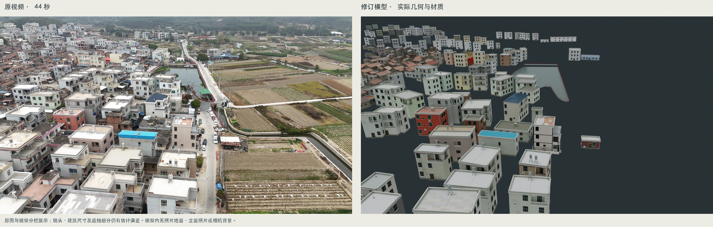
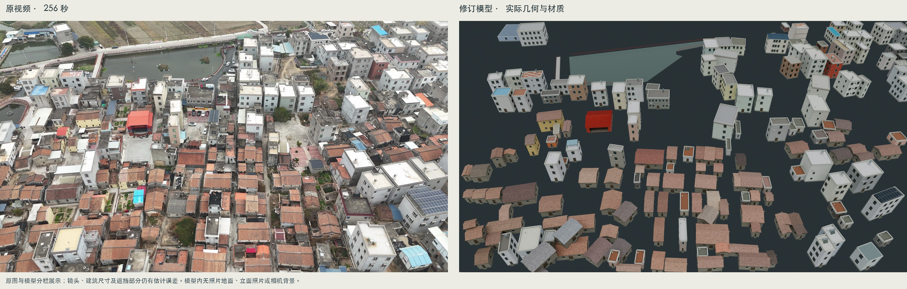

XZ VILLAGE / MULTIVIEW REVISION
去返程共同修订：直角轮廓与分面材质
保留基准建筑与 297 个编号重建单元。四栋近景住宅采用有直角缺口的平面；17 个单元有明确的返程修正，其余单元更新材质、檐口、窗套和瓦片表现。编号包含屋顶与侧翼单元，并非 298 户住宅的统计。
照片仅用于下方独立参考栏。模型内没有照片铺地、立面照片覆层或相机背景。直角约束针对墙体平面；坡屋顶保留坡度。尺寸、缺角向底层的延伸、被遮挡的门窗仍属估计。
两处可直接核对的修正

去程 · 44 秒

返程 · 256 秒

17 个重点修订
点击图片可放大。正反斜视用于检查结构，不与原图作像素级重合。返程镜头采用既有手工控制点估计，尚未完成去返程统一摄影测量校准。
B007 · 红楼后方灰色四层住宅
返程显示四层；增加背面成对窗、小窗与空调，修正屋顶直角缺角。
B008 · 西侧白色转角阳台住宅
修正转角缺口，并区分阳台正面与返程背面窗洞。
B009 · 西侧浅绿色住宅
保留浅绿色正面，背侧改为褪色灰白墙，减少重复窗洞。
B010 · 西侧白色平顶住宅
加入浅缺角；返程侧改为每层单窗与较轻的灰白旧墙。
B012 · 蓝色坡顶西侧白色住宅
恢复直角缺口、转角阳台及背面的双窗布局。
B013 · 灰楼后方三层砖混毛坯房
按返程毛坯房修改：裸砖、混凝土框架、空窗洞，移除假阳台及玻璃。
B019 · 池塘西侧白色多阳台住宅
按返程减少背面窗户，恢复大面积素墙。
R001 · 返航北池边灰色住宅
墙面恢复低饱和棕色砖面。
R002 · 返航北池边白色窄楼
修正灰色小砖墙与暗红檐口；后侧屋顶延伸仍待更可靠定位。
44 秒原视频局部256 秒原视频局部主要参考估计机位模型正面斜视模型背面斜视 R007 · 返航北池边老灰楼
旧墙改为深灰色，并补齐返程上层一排六扇窗。
44 秒原视频局部256 秒原视频局部主要参考估计机位模型正面斜视模型背面斜视 R008 · 返航北池边旧屋顶
旧墙色调与相邻老屋协调，保留独立屋顶单元。
44 秒原视频局部256 秒原视频局部主要参考估计机位模型正面斜视模型背面斜视 R009 · 返航北池边西侧蓝顶楼
恢复蓝色平屋顶防水层。
44 秒原视频局部256 秒原视频局部主要参考估计机位模型正面斜视模型背面斜视 R010 · 返航北池边西侧红瓦露台楼
恢复较暗的红褐色露台铺面。
44 秒原视频局部256 秒原视频局部主要参考估计机位模型正面斜视模型背面斜视 R013 · 返航北池边西侧拼花顶白楼
恢复红褐色露台铺面，区分中央小窗与两侧大窗。
44 秒原视频局部256 秒原视频局部主要参考估计机位模型正面斜视模型背面斜视 R017 · 村内白色长露台楼
补建返程可见的浅蓝色露台棚及细支柱。
44 秒原视频局部256 秒原视频局部主要参考估计机位模型正面斜视模型背面斜视 R021 · 东南侧白色转角大住宅
恢复灰白色大面积素墙，保留较低位置的小窗。
256 秒原视频局部主要参考估计机位模型正面斜视模型背面斜视 R022 · 东南侧白色大露台住宅
将墙面调整为淡米灰色。
256 秒原视频局部主要参考估计机位模型正面斜视模型背面斜视 全部 297 单元双面图册
每组编号含正反两个方向，同一模型、同一材质。图册覆盖所有单元；完整图册检查与近景逐张检查的范围见检验说明。